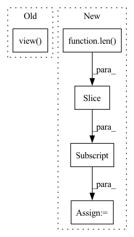

Pattern ID :16828

Before Change
if self.gate_type == "features":
self.scale = nn.Parameter(torch.ones((input_shape[-1],)), requires_grad=True).view(1, 1, input_shape[-1])
elif self.gate_type == "heads":
self.scale = nn.Parameter(torch.ones((input_shape[1],)), requires_grad=True).view(1, input_shape[1], 1, 1)
self.scale = self.scale.repeat(1, 1, 1, input_shape[-1])
// Prepare streams info
self.streams_in_module = {"inputs": [[self.input_name, input_shape],
After Change
// Built einsum input strings
self.einsum_in_1 = "abcdef"
self.einsum_in_1 = self.einsum_in_1[:len(self.input_shape)]
self.einsum_in_2 = self.einsum_in_1[self.dim_to_scale]
print(f"{self.einsum_in_1},{self.einsum_in_2}->{self.einsum_in_1}")
In pattern: SUPERPATTERN
Frequency: 3
Non-data size: 5
Instances
Fragment ID: 56316499
Project Name: antofuller/configaformers
Commit Name: 587753fa0f50da143bb3a3ad4da1d65e3ee72c60
Time: 2021-11-11
Author: afuller187187@gmail.com
File Name: norm_module.py
M Class Name: Gate
N Class Name: Gate
M Method Name: __init__(3)
N Method Name: __init__(3)
M Parent Class: nn.Module
N Parent Class: nn.Module
M File Name: norm_module.py
N File Name: norm_module.py
M Start Line: 106
M End Line: 123
N Start Line: 106
N End Line: 129
'>
Before Change
interval = 16
idx = torch.arange(0,T,interval)
rpn_inputs = inputs[:,:,idx]
rpn_inputs = rpn_inputs.transpose(1,2).contiguous().view(N*(T//interval),C,H,W)
with torch.no_grad():
proposals = rpn(rpn_inputs)
proposals = proposals.view(N,T//interval,10,4)
outputs = model(inputs, proposals.detach())
After Change
proposals = rpn(rpn_inputs)
proposals = proposals.view(-1,T//interval,10,4)
if len(inputs) < max_N:
proposals = proposals[:len(inputs)]
outputs = model(inputs, proposals.detach())
// update to the largest batch_size
max_N = max(N, max_N)
else:
'>
Fragment ID: 56316498
Project Name: jd730/strg
Commit Name: 439d8eb70d35c5cc16fdabda09a67e2149af8c8a
Time: 2020-06-12
Author: jdhwang730@gmail.com
File Name: training.py
M Class Name: AnonimousClass
N Class Name: AnonimousClass
M Method Name: train_epoch(12)
N Method Name: train_epoch(12)
M Parent Class:
N Parent Class:
M File Name: training.py
N File Name: training.py
M Start Line: 57
M End Line: 62
N Start Line: 50
N End Line: 76
'>
Before Change
interval = 16
idx = torch.arange(0,T,interval)
rpn_inputs = inputs[:,:,idx]
rpn_inputs = rpn_inputs.transpose(1,2).contiguous().view(N*(T//interval),C,H,W)
print(rpn_inputs.shape)
with torch.no_grad():
proposals = rpn(rpn_inputs)
proposals = proposals.view(N,T//interval,10,4)
After Change
proposals = rpn(rpn_inputs)
proposals = proposals.view(-1,T//interval,10,4)
if len(inputs) < max_N:
proposals = proposals[:len(inputs)]
outputs = model(inputs, proposals.detach())
// update to the largest batch_size
max_N = max(N, max_N)
else:
'>
Fragment ID: 56316501
Project Name: jd730/strg
Commit Name: b98d2a6a9e626ae8be88646109eca0d53f1f4af5
Time: 2020-06-12
Author: jdhwang730@gmail.com
File Name: validation.py
M Class Name: AnonimousClass
N Class Name: AnonimousClass
M Method Name: val_epoch(9)
N Method Name: val_epoch(9)
M Parent Class:
N Parent Class:
M File Name: validation.py
N File Name: validation.py
M Start Line: 40
M End Line: 49
N Start Line: 34
N End Line: 62